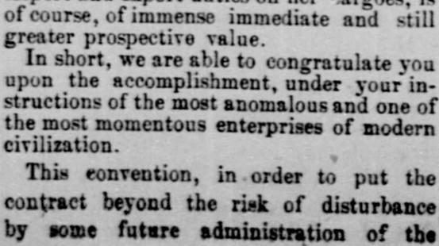
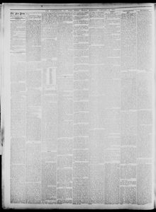

See the full pageVer la página completaThis convention, in order to put the contract beyond the riskEsta convención, a fin de poner el contrato fuera del riesgo
According to the Burlington weekly free press on January 31, 1873, U.S. Commissioners reported that a convention regarding a contract in the Dominican Republic was submitted to a public vote to prevent future administrative interference, with voting underway on the 9th inst. The Commissioners expressed confidence that the popular vote would be nearly or quite unanimous for ratification, making the convention part of the Republic's fundamental law. Additionally, they noted receiving good wishes from leading foreign merchants and European consular representatives, along with assurances that the free port and city of Samana could quickly attract a large population from various West Indian islands.Según el Burlington Weekly Free Press del 31 de enero de 1873, los comisionados de los Estados Unidos informaron que la convención relativa a un contrato en la República Dominicana se sometió a plebiscito popular para conjurar futuras injerencias de gobiernos venideros, habiéndose iniciado la votación el día 9 del corriente. Los delegados manifestaron su certidumbre de que el sufragio popular respaldaría casi unánimemente la ratificación, elevando la convención a rango de ley fundamental de la república. Añadieron haber recibido parabienes de los principales mercaderes foráneos y agentes consulares europeos, junto con el augurio de que la ciudad y puerto franco de Samaná atraerían prontamente una copiosa corriente inmigratoria proveniente de diversas islas antillanas.
FULL TEXT:TRADUCCIÓN:
...by exempting the business of the Company from imposts, taxes, assessments, and charges of every kind, they enable the Company, through its own commercial agencies, established throughout the Republic, to carry on, if you choose, the entire commerce of a country which has nearly a million of dollars gold revenue from its custom-house, and can be developed, in time, to proportions many times larger....al eximir el negocio de la Compañía de impuestos, contribuciones, gravámenes y cargos de toda clase, habilitan a la Compañía, a través de sus propias agencias comerciales, establecidas en toda la República, para llevar a cabo, si se quiere, todo el comercio de un país que tiene casi un millón de dólares de ingresos en oro de su aduana, y puede ser desarrollado, con el tiempo, a proporciones muchas veces mayores.
The concession of the right to have any of your vessels fly any flag you choose, and yet to be registered and treated as Dominican vessels, in the coasting and other trade, gives us, of course, all the carrying trade of the Republic, and the right of all your steamers which may carry freights between Samana and any other port of the Republic to participate in the privilege at present accorded to the Tybee by the terms of which the proprietors of that steamer enjoy a drawback of fifteen per cent. upon all the import and export duties on her cargoes, is of course, of immense immediate and still greater prospective value.La concesión del derecho de que cualquiera de sus buques enarbole cualquier bandera que elija, y sin embargo sea registrado y tratado como buques dominicanos, en el comercio de cabotaje y otros, nos da, por supuesto, todo el comercio de transporte de la República, y el derecho de todos sus vapores que puedan llevar fletes entre Samaná y cualquier otro puerto de la República a participar en el privilegio actualmente acordado al Tybee por los términos del cual los propietarios de ese vapor disfrutan de un reembolso del quince por ciento sobre todos los derechos de importación y exportación de sus cargamentos, es por supuesto, de inmenso valor inmediato y aún mayor valor prospectivo.
In short, we are able to congratulate you upon the accomplishment, under your instructions of the most anomalous and one of the most momentous enterprises of modern civilization.En resumen, podemos felicitarle por el logro, bajo sus instrucciones, de la más anómala y una de las más trascendentales empresas de la civilización moderna.
This convention, in order to put the contract beyond the risk of disturbance by some future administration of theEsta convención, con el fin de poner el contrato más allá del riesgo de perturbación por alguna administración futura de la
Burlington Weekly Free Press. Burlington, Vt., January 31, 1873. Page 2.